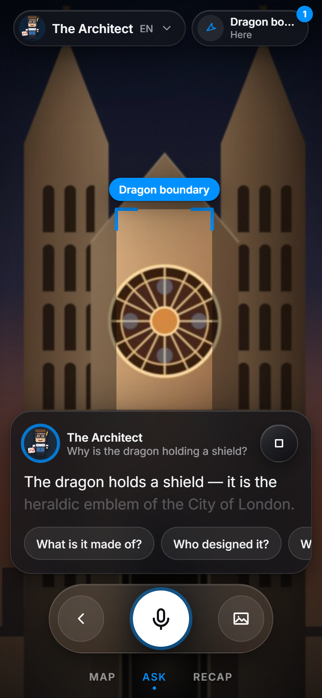
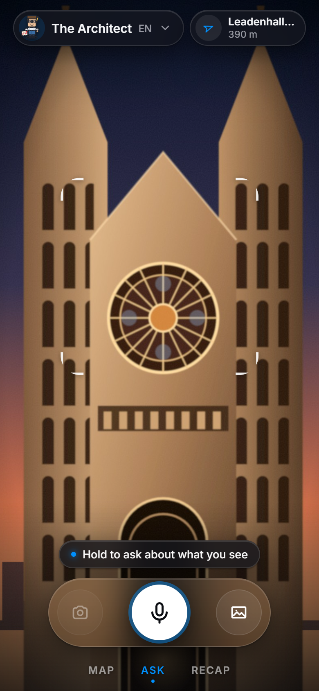
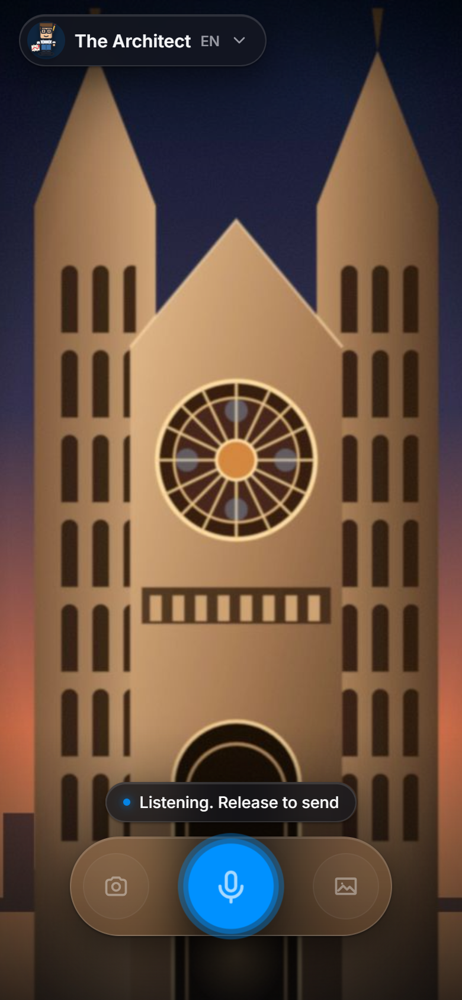
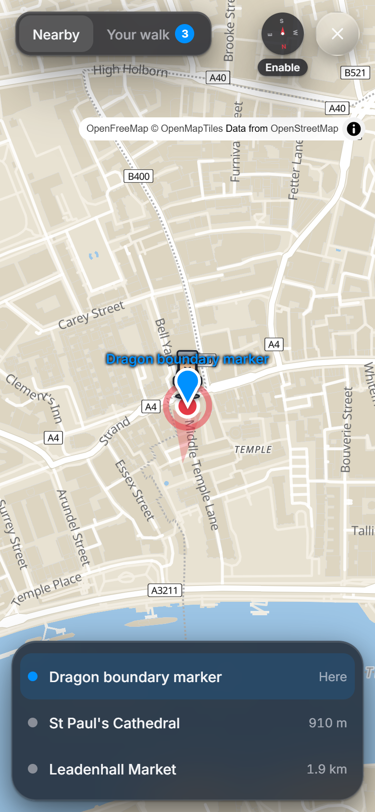
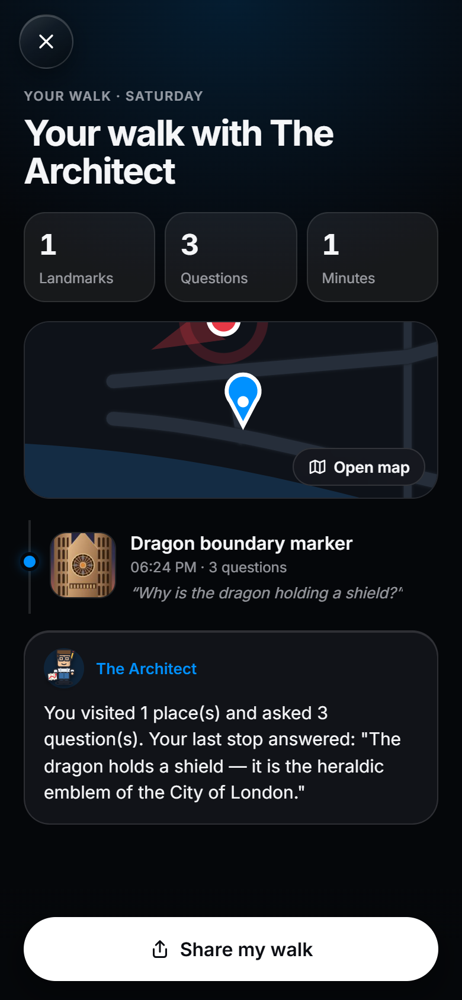

400 pages. None of them about this.
Talking about something two streets away.
A text card. Which part of the building?
| Ask out loud | Answers out loud | About what you see | Shows exactly where | |
|---|---|---|---|---|
| Guidebook | ✕ | ✕ | ✕ | ✕ |
| Audio tour | ✕ | ✓ | ✕ | ✕ |
| Visual search apps | sometimes | sometimes | ✓ | ✕ |
| Vysta | ✓ | ✓ | ✓ | ✓ |


No more aiming. You and the guide look at the same picture.
Box, label and pulsing point on what the answer is about.
In their own voice; the caption reveals word by word.
AI follow-up questions tailored to this answer.


Push-to-talk in the browser, frame frozen on press
Speech → text, EN / ES
Box + point on the frame, nearby landmarks from GPS
Persona answer + follow-up questions
A different voice for each guide
Talk → transcribe → ground → answer → speak
Own voice, tone and theme each, EN / ES
Nearby landmarks steer what it recognises
Ask about what you shot earlier
Next questions tailored to each answer
Route, stops, summary, share
Personalised from a quick face scan
Demo never depends on venue Wi-Fi
API + PWA on the same origin